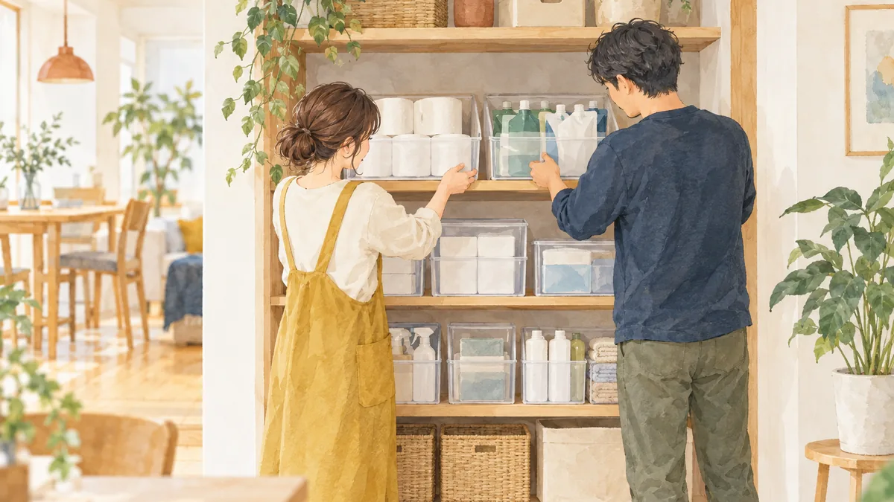

DAILY GOODS
日用品のまとめ買いとストック。トイレットペーパーはいくらなら安いか、1m あたりで比べる方法

本記事にはアフィリエイト広告（PR）が含まれます。紹介した商品を購入されると、当サイトに報酬が入ることがあります。内容は運営者が調べて書いています。
トイレットペーパー、ティッシュ、洗剤。日用品は 1 回の金額は小さくても、家族で使うと 1 年で大きな額になります。「12 ロールでいくら」という比べ方では、長さが違う商品を比べられません。この記事では、単価の比べ方と、まとめ買いで損をしない量、ストックの持ち方を整理します。今週の親記事 家族の支出を 7 つのジャンルで見直す順番 の関連記事です。
この記事について
- 計算例の価格と長さは、説明のための例です。実際の商品の表示で計算してください。
- 本記事にはアフィリエイトリンクが含まれます。
トイレットペーパーは「1m あたり」で比べる
トイレットペーパーは、1 ロールの長さが商品によって違います。シングルとダブル、通常巻きと長巻きでも長さが変わるため、比べるときは「価格 ÷（ロール数 × 1 ロールの長さ）」で 1m あたりの価格を出します。
| 例 | 価格 | ロール数 × 長さ | 1m あたり |
|---|---|---|---|
| A（ダブル・通常巻き） | 500 円 | 12 ロール × 25m ＝ 300m | 約 1.67 円 |
| B（ダブル・2 倍巻き） | 600 円 | 6 ロール × 50m ＝ 300m | 2.00 円 |
| C（シングル・通常巻き） | 500 円 | 12 ロール × 50m ＝ 600m | 約 0.83 円 |
シングルとダブルは 1 回に使う長さが違うため、1m あたりだけでなく、家族が 1 か月で何ロール使うかも合わせて比べます。長巻きは 1m あたりが高くても、交換の手間と置き場所が減る利点があります。
洗剤・シャンプーは「1 回あたり」で比べる
洗剤やシャンプーは、容量と 1 回の使用量から「1 回あたり」を出すと比べやすくなります。詰め替えの大容量は 1 回あたりが安いことが多い一方、使い切るまでの期間が長くなりすぎると、置き場所や品質の面で不便になります。
まとめ買いで損をしない量
- ストックは 1〜2 か月分を目安に。 それ以上は、置き場所と「どこにあるか分からない」問題が出やすくなります。
- セールの時期に合わせて補充する。 楽天市場のセールの時期にまとめて補充すると、ポイントの面でも有利です（楽天お買い物マラソンの攻略）。
- 新しい銘柄を大量に買わない。 合わなかったときに使い道がなくなります。まず 1 つ試してから。
ストックの持ち方
- 定位置を 1 か所に決める。 家族の誰が見ても、在庫が分かる場所にします。
- 「最後の 1 つ」で補充する。 最後の 1 つを開けたら、買い物リストに書く決まりにします。
- 見える収納にする。 中身の見えるケースや棚で、残りの量をひと目で分かるようにします。
まとめ
- トイレットペーパーは 1m あたり、洗剤は 1 回あたりで比べる。
- ストックは 1〜2 か月分、セールの時期に補充する。
- 定位置と「最後の 1 つで補充」の決まりで、買いすぎと切らしを防ぐ。